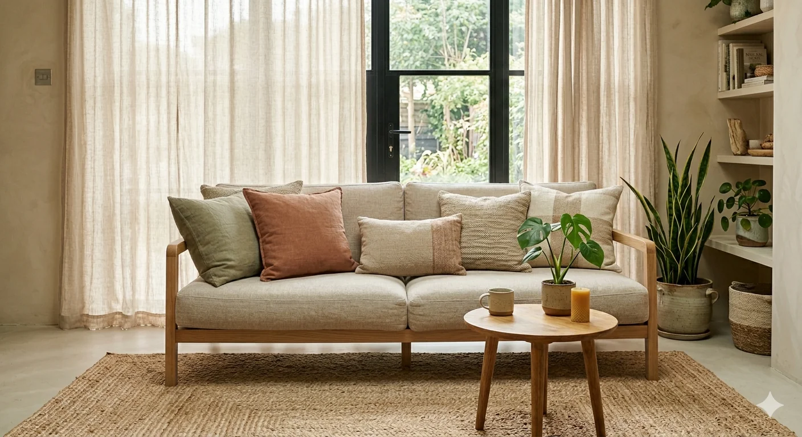
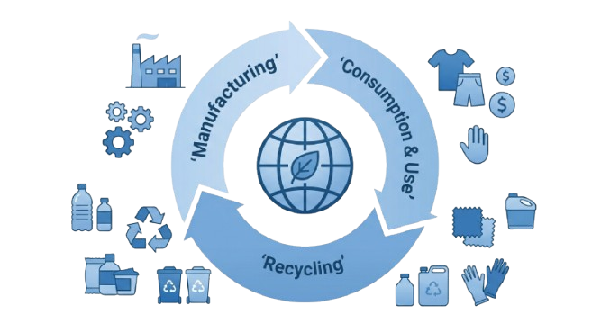

Loading...
Loading...

SUSTAINABILITY
Sustainability at TajPak is integrated into every stage of the sourcing lifecycle — from supplier selection to final production. We ensure that global buyers receive ethically manufactured, resource-efficient, and fully transparent supply chain solutions that align with modern compliance, ESG standards, and long-term brand responsibility.
Your brand is judged by every factory in your supply chain. We verify ethical labor and production standards before partnership — so you never have to explain a violation to your customers.
Sustainability is no longer a premium — it's an expectation. We source organic cotton, BCI cotton, recycled fibers, low-impact dyes, and formaldehyde-free materials at competitive prices — so you can go green without going over budget or compromising on safety.
Waste is not just an environmental problem — it's a cost problem. We source from mills that optimize water, energy, and materials — so you save money while reducing your environmental footprint.
Textile waste is expensive — in materials, disposal, and reputation. We implement optimized planning and recycling initiatives at the factory level — so we cut waste, lower costs, and improve your ESG performance.
Hidden factories create risk. Hidden costs erode trust. Hidden problems become crises. We give you full visibility into vendor selection, pricing, and production to ensure sourcing with confidence, not guesswork.
SUSTAINABILITY
Sustainability at TajPak is not a standalone initiative — it is embedded into our sourcing architecture. We align suppliers, materials, and production systems with internationally recognized environmental and ethical standards — ensuring every order contributes to a more responsible, traceable, and competitive global textile ecosystem. Sustainability embedded in our sourcing architecture — not as a layer, but as a foundation: OEKO-TEX • BSCI • Sedex • GOTS • AQL 4.

SUSTAINABILITY CERTIFICATIONS


SUSTAINABILITY FAQ
Learn how TajPak integrates sustainability, ethical manufacturing, and global compliance into every stage of our sourcing operations.
Sustainability at TajPak means embedding eco-friendly materials, ethical manufacturing, and transparent sourcing into every order — verified by OEKO-TEX, BSCI, and Sedex standards across home textiles and apparel.
We partner exclusively with factories that pass rigorous audits for ethical labor practices, worker safety, fair wages, and reasonable working hours — aligned with BSCI and Sedex standards. Regular compliance checks and documented verification ensure ongoing accountability.
Yes — organic, BCI, recycled, low-impact dyes, formaldehyde-free. OEKO-TEX and GOTS certified.
Water efficiency. Energy optimization. Precision cutting. Waste recycling. Lower impact, smarter production.
Yes — OEKO-TEX, amfori BSCI, Sedex, GOTS aligned. Verified and monitored.
At TajPak, we believe in responsible sourcing and environmentally conscious textile production. Join us in creating a greener, cleaner, and more ethical global supply chain.
Sustainable sourcing • Certified partners • Responsible production in Faisalabad, Pakistan